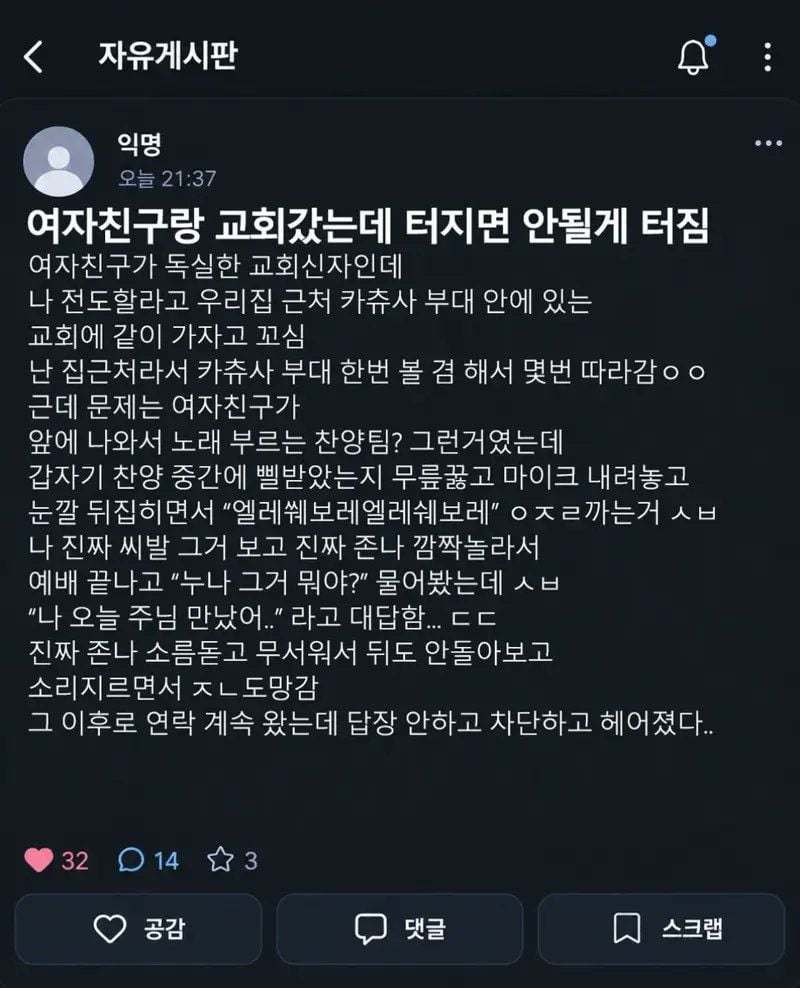

"빨리 도망치거라 어린양아..."

"빨리 도망치거라 어린양아..."
사람이 너무 이성적이면 하고싶어도 못함
보면 억지로 감정적 고양을 일으키려고 밴드의 음악이나 목회자의 음성이 고조되기 시작하는데
개붕이 같은 사람은 그딴걸로 감정의 절정에 달하지 못할 정도로 이성적인 사람인거임
가끔 나도 걍 방언이나 하고 감정 배설 시원하게 하는 그런 인간이면 어떨까 함
그편이 차라리 더 행복할지도 모른다는 상상을 가끔함
일종의 트랜스 상태나 집단 최면의 상태여야 가능하단 소리구나.. 쉽지 않네..
교회처음나가서 그거보고 그거 각자집에서 연습해오는거냐했다가 혼날뻔함
정신병임
초2때 친구따라서 교회가서 500원 냈는데
다음부터는 지폐내라는 소리듣고 다시는안감
사실상 부두술에 가깝다고 생각함 주술사인거지
군대 채플중에 개방된 교회가 있어?
카투사 군종병도 카투사끼리 예배할때나 한국말로하지 그외는 영어로 할텐데
https://youtu.be/0z-oJTZ1b5Q
이런거임?ㅋㅋㅋㅋㅋㅋㅋ
방언을 하는 것이 남들이 들을 땐
무슨 말을 하는 건지는 모르겠지만.
뭐 그냥 기도의 방식 중 하나인거
하고 싶은 말을 언어로 다 표현하지 못한다고 해도
하나님은 아실 거니까
일껄?
정신병임
방언잘하는법 책도 있고 유튜브 강의 콘텐츠 있던데
아 시발ㅋㅋㅋ 유튜브는 별게 다 강의로 있네
엘렐레~ 시보레! 서계적인차!
시부레
ㅡ쉐보레바이럴ㅡ
방언..ㅋㅋㅋㅋ
난 여기서 방언 기도 처음 들음... 심지어 교회 주말 예배 따라다녔는데도 처음 들었음...
하는데만 함. 저게 그냥 이상한 소리를 하는게 아니라 차 기어 바꾸듯이 추임새로 악세루를 잘 넣어줘야하는데 그걸 잘 하는 목사님들은 저 뽕맛 못놓고 계속 함. 대표적인게 순복음 조용기 목사. 근데 그거 진짜 쉽지 않음.
군대에서 교회 가봤는데 노래하면서 울고 뭐하다 울고 신기하긴 함
쉐보레면 도망가야지 암 ㅋㅋ
잘 도망갔네. 여자가 교회다니면 결혼할때 남자는 거의 대부분 개종하더라. 자기도 저기 가서 해야한다는 뜻이지
나도 교회 다니면서 하는건 많이 봤는데 아직도 어떻게 하는지 이해도 안되고 하고 싶지도 않음
애초에 그냥 집안이 기독교 집안이라 억지로 다녀서 그런가 싶기도 하고..
물론 지금은 더 이상 안다녀서 앞으로도 알길은 없긴 함 ㅋㅋ